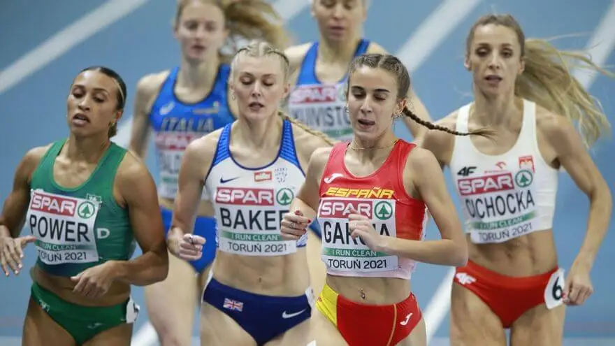
Daniela García: “Es injusto que la Federación reduzca todo a un simple número”
atletismo
La atleta mallorquina Daniela García vive uno de los momentos más frustrantes de su
carrera tras quedarse a tan solo 23 centésimas (2:00.23) de la marca de excelencia exigida por la
Real Federación Española de Atletismo (RFEA) para acudir al Mundial de Tokio.
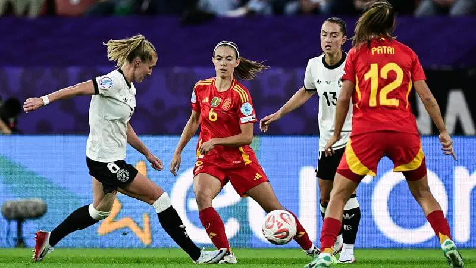
España alcanza las semifinales europeas tras un duelo de máxima exigencia
fútbol
La selección española femenina superó por primera vez una eliminatoria continental y
se metió en semifinales tras imponerse con autoridad en un partido marcado por la posesión, la
paciencia y la eficacia en los momentos clave.
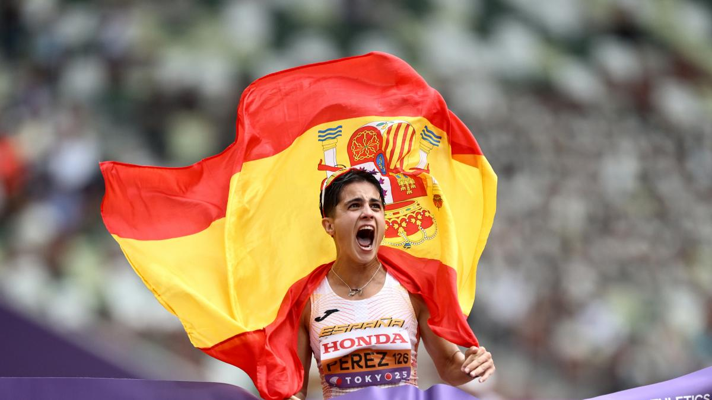
El conjunto español se sube dos veces al podio mundial en Río
gimnasia rítmica
España logró dos medallas de bronce en el Mundial de Gimnasia Rítmica, confirmando su
regularidad en la élite internacional y rozando un tercer metal en una final decidida por escasas
décimas.
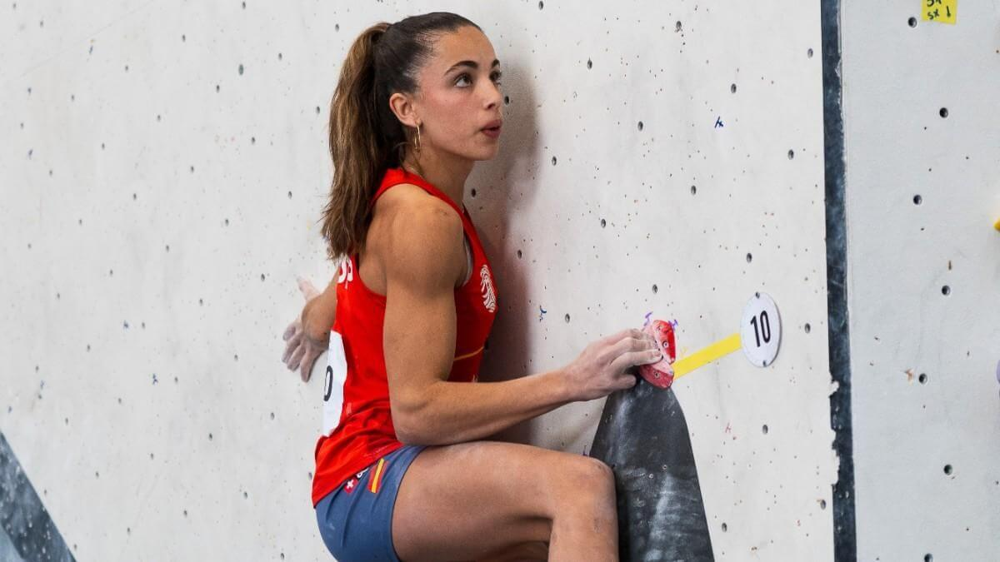
Andrea Tankeu denuncia la falta de medios tras proclamarse campeona de Europa
escalada
Pese a su oro continental, la atleta española alerta de la precariedad estructural que
sufre, sin acceso a instalaciones adecuadas, evidenciando las dificultades que aún afronta el
deporte femenino de élite.
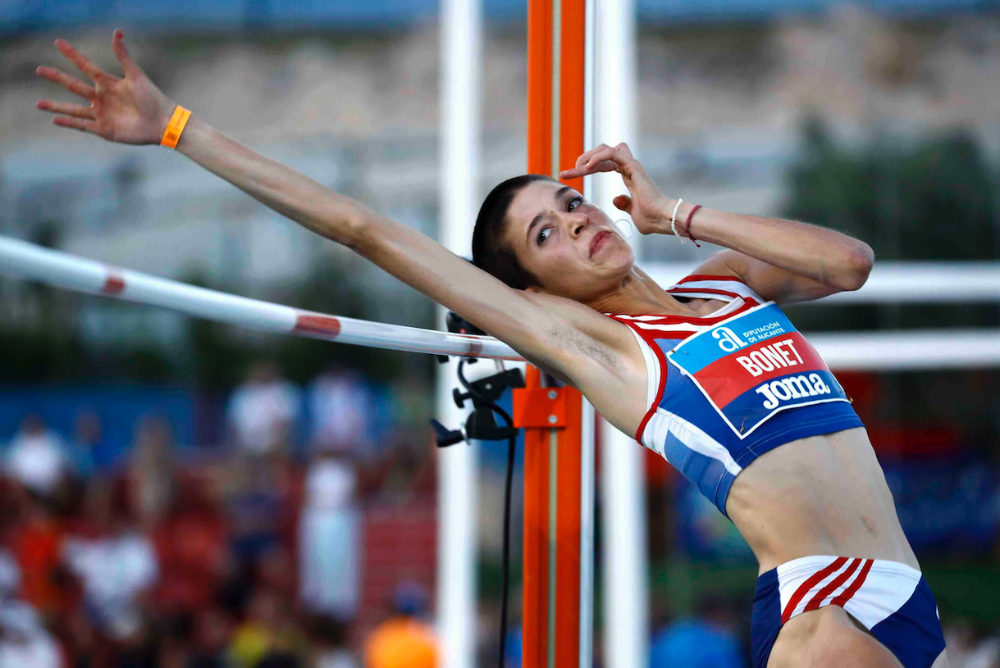
Ona Bonet hace historia con un bronce inédito en salto de altura
atletismo
La joven atleta catalana conquistó la primera medalla española sub-20 en salto de
altura en un Europeo, confirmando el excelente momento de las nuevas generaciones del atletismo
femenino.
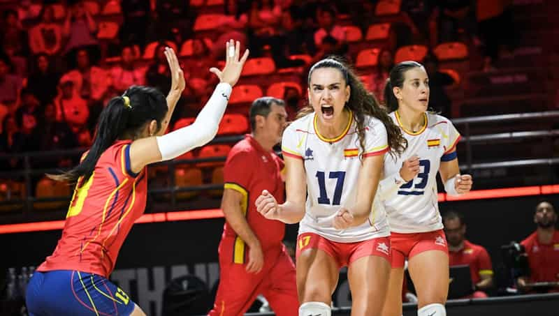
La selección femenina regresa al Europeo con pleno de victorias
voleibol
España certificó su billete para el Campeonato de Europa tras dominar la fase
clasificatoria, mostrando solidez colectiva y carácter competitivo en los encuentros más exigentes.
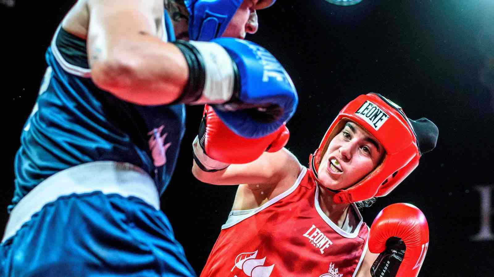
El boxeo femenino español se consolida como disciplina olímpica de futuro
boxeo
El crecimiento sostenido del boxeo femenino en España refuerza sus aspiraciones de
cara a Los Ángeles 2028, con una generación cada vez más preparada y respaldada a nivel
internacional.
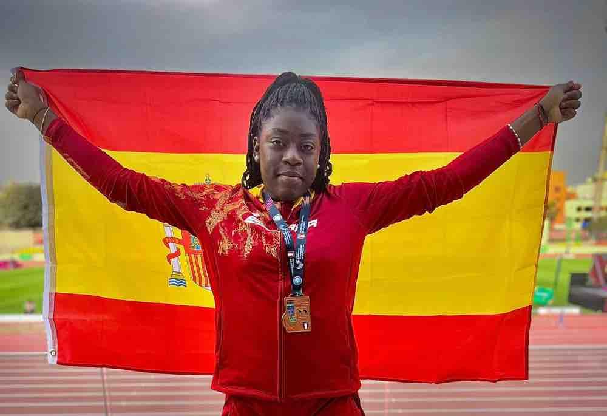
España firma su mejor actuación histórica en un Europeo sub-20
atletismo
Con un total de 14 medallas y un tercer puesto en el medallero, la delegación española
cerró el campeonato con cifras récord, confirmando el auge del atletismo femenino de base.
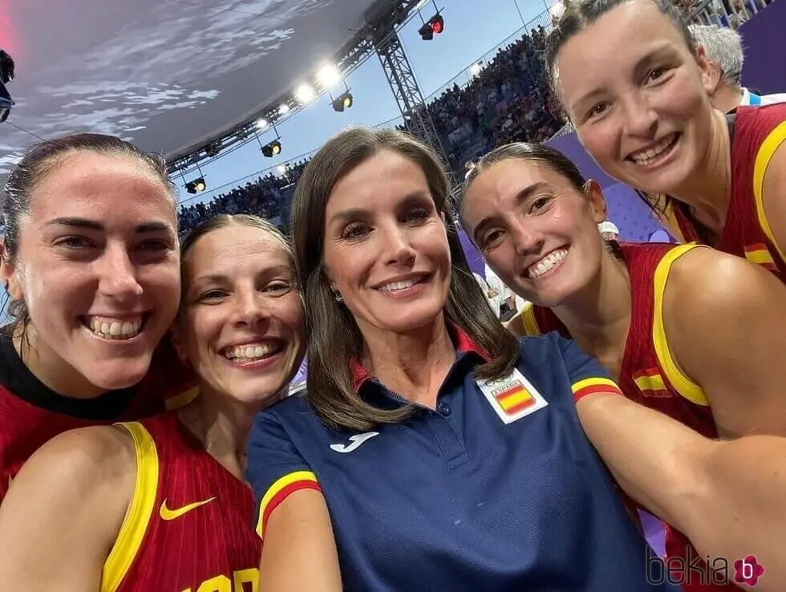
El baloncesto femenino español refuerza su relevo generacional
baloncesto
Las jóvenes promesas del baloncesto femenino siguen dando pasos firmes en
competiciones internacionales, consolidando un relevo que garantiza competitividad a medio y largo
plazo.
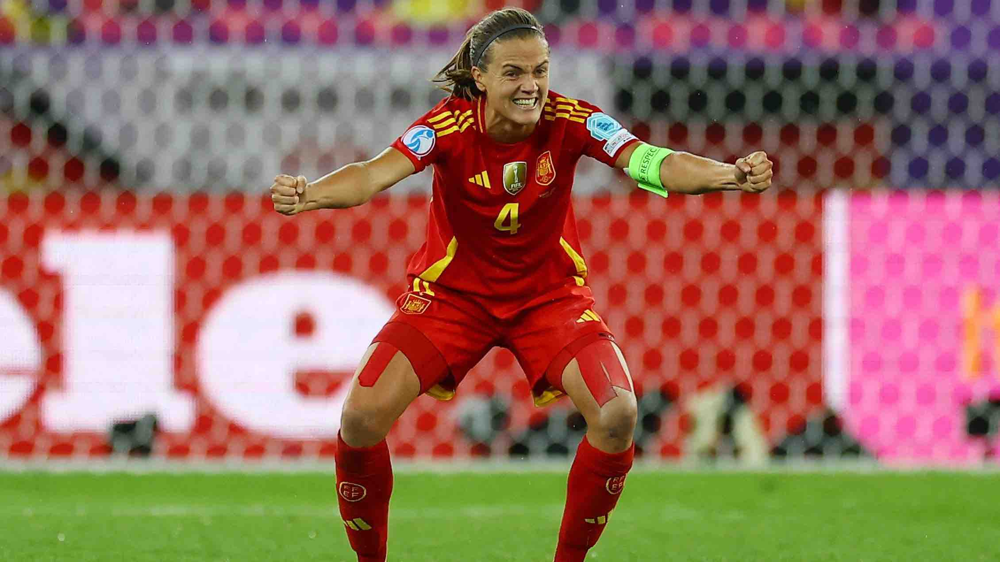
El fútbol femenino español consolida su presencia en la élite europea
fútbol
El combinado nacional continúa creciendo en los grandes torneos continentales,
destacando por su solidez defensiva y su capacidad para competir ante las potencias
tradicionales.
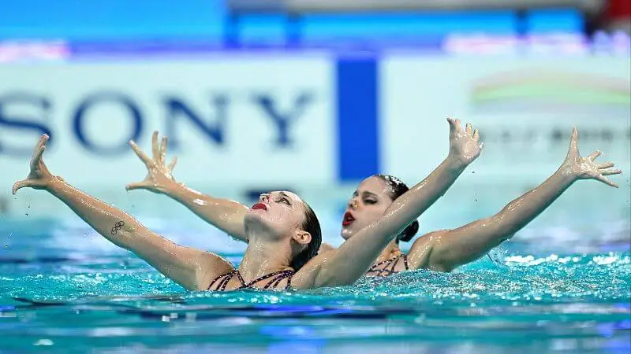
La natación artística española vuelve a brillar en competición internacional
deportes acuáticos
El equipo español firmó una actuación notable en una cita internacional, confirmando
su evolución técnica y su capacidad para mantenerse entre las mejores selecciones del panorama
mundial.